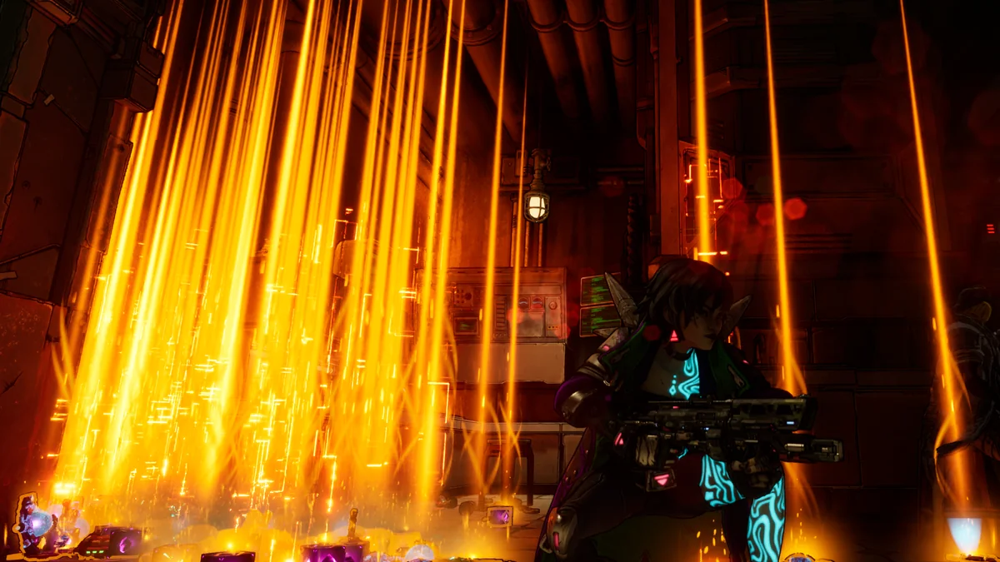

Discord
Talk gear, share builds, and catch community announcements in Funk’s Borderlands Trading Hub.
Join the DiscordFUNKYOUSHIFT / BORDERLANDS 4
Borderlands 4 gear, loot drops, and a community that goes all in. Connect with Funk on Discord, YouTube, or Twitch.
Choose your channel
GET CONNECTED
Pick your platform. Keep up with the drops, streams, and community.
Talk gear, share builds, and catch community announcements in Funk’s Borderlands Trading Hub.
Join the DiscordWatch the loot drops and Borderlands videos. Subscribe to keep Funk in your feed.
Watch on YouTubeHang out during a stream, talk Borderlands in chat, and follow for the next broadcast.
Follow on TwitchBEFORE THE NEXT DROP
Find current free modded weapon events and updates through the community and streams. Check announcements for availability, and mention your platform when asking about gear.
Events and item compatibility can change with game updates. A previous stream doesn’t mean a drop is happening right now.
Back up your saves where supported and respect other players. FunkYouSHiFT is an independent community, not affiliated with Gearbox or 2K.